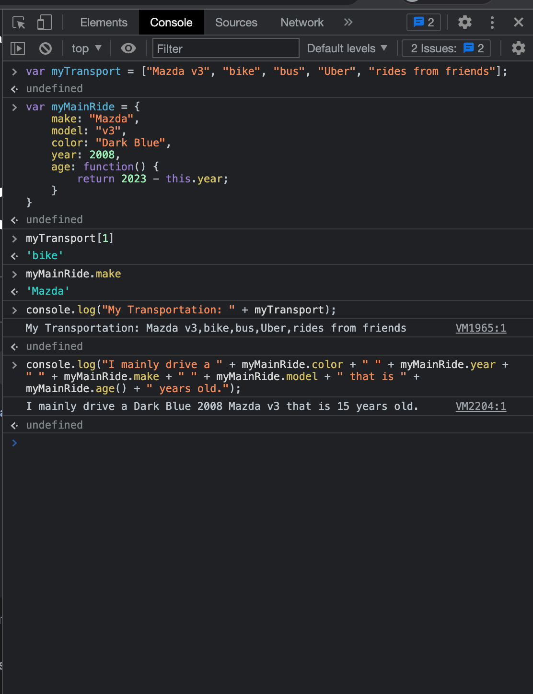
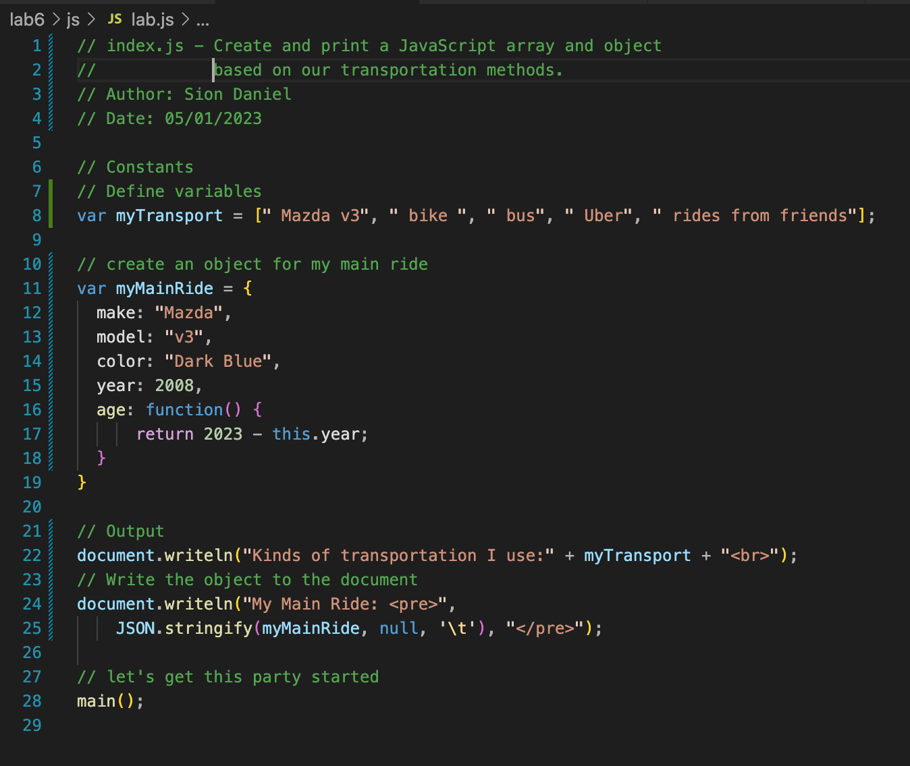

Lab 6 - Arrays and Objects

Challenge
Create and print a JavaScript array and object based on our transportation methods.
Problems
We ran into some problems when printing the myMainRide variable to the console. In order to fix this, we printed each part of the object one at a time, to find out we had been missing a plus.
Reflection
We thought this assignment was a little bit repetative compared to Lab 5. We did find it interesting to learn about arrays and objects, and how they can be used to store data.
Results

